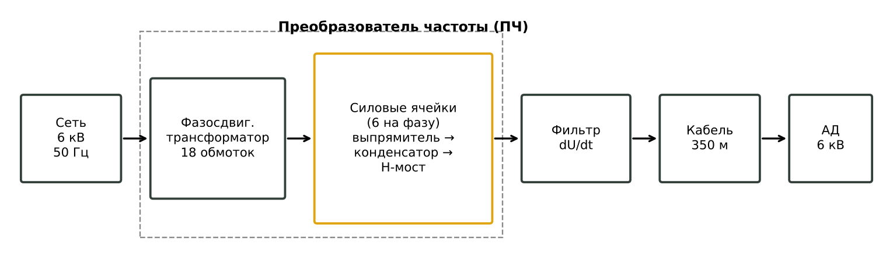
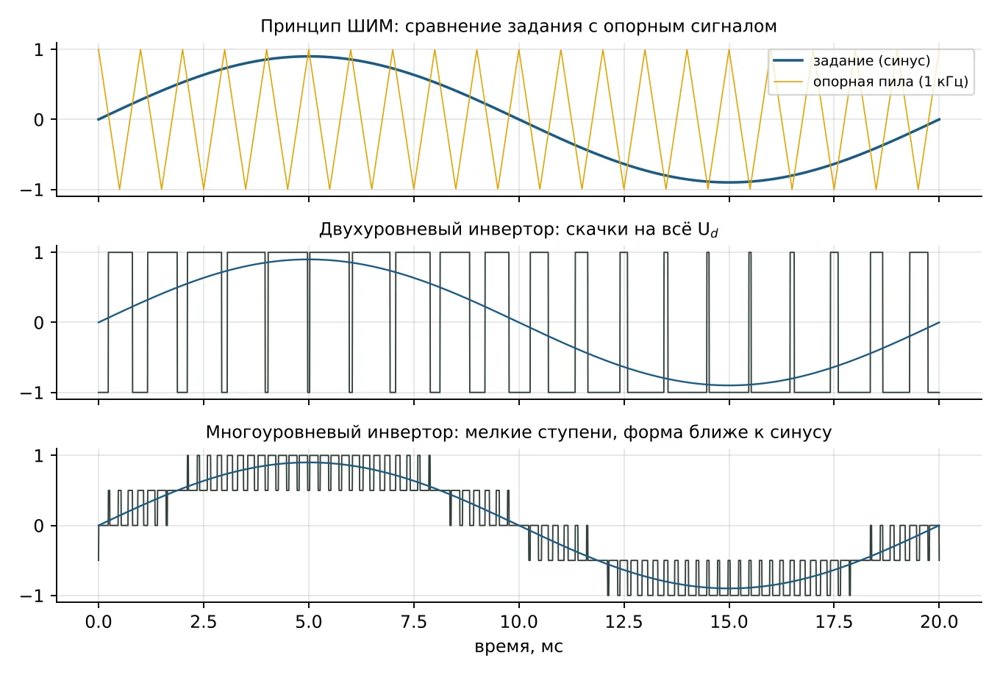
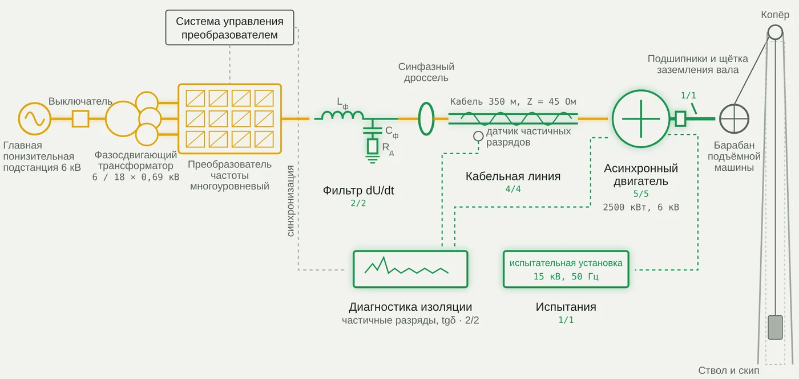

Техника высоких напряжений
Лекция 1 · вариант 1 расчётной работы
Частотно-регулируемый электропривод шахтной подъёмной установки 6 кВ
Объект, преобразователь частоты, ШИМ и многоуровневые инверторы, мнемосхема
Цель. Разобрать, как устроен частотно-регулируемый привод скиповой подъёмной установки глубокой шахты, как работает преобразователь частоты (ПЧ) с широтно-импульсной модуляцией и почему именно ПЧ создаёт для изоляции двигателя и кабеля новые нагрузки, которые рассчитываются в неделях 1–15. Связанные материалы. Лекции 2 и 3, методические указания, игра-тренажёр «Наладка подъёма: ЧРП 6 кВ». |
1. Шахтная подъёмная установка
Скиповая подъёмная установка поднимает горную массу с глубоких горизонтов на поверхность в саморазгружающихся сосудах — скипах. В её состав входят подъёмная машина (барабан или шкив трения с канатами), копёр со шкивами, скипы в стволе, приводной двигатель и система управления. Цикл подъёма состоит из разгона, равномерного хода, замедления и дотягивания скипа к разгрузочному устройству; затем цикл повторяется с противоположным направлением.
Требования к приводу: плавный разгон и торможение без рывков каната, точная остановка, длительная работа на пониженной скорости при ревизии ствола, рекуперация энергии при спуске груза, высокая надёжность — отказ подъёма останавливает добычу. Этим требованиям отвечает частотно-регулируемый привод с асинхронным двигателем (АД) 6 кВ, 2500 кВт и многоуровневым ПЧ.
2. Асинхронный двигатель и регулирование частоты
Частота вращения асинхронного двигателя определяется частотой питающего напряжения f, числом пар полюсов p и скольжением s:
(1)
Плавно меняя f от долей герца до 50 Гц, ПЧ плавно меняет скорость подъёма. Чтобы магнитный поток машины оставался номинальным, вместе с частотой меняют и напряжение (закон U/f = const, на практике — векторное управление). Номинальный ток двигателя при cos φ = 0,88 и КПД 0,96:
(2)
3. Преобразователь частоты
ПЧ преобразует напряжение сети 50 Гц в напряжение регулируемой частоты и амплитуды. Он состоит из трёх звеньев:
Выпрямитель — диодный или активный мост; выпрямляет напряжение сети. Активный выпрямитель позволяет возвращать энергию торможения в сеть (рекуперация при спуске груза).
Звено постоянного тока — конденсаторная батарея, поддерживающая напряжение Ud. Для трёхфазного мостового выпрямителя Ud ≈ 1,35·Uл.
Инвертор напряжения на IGBT-транзисторах: ключи поочерёдно подключают выводы двигателя к шинам звена постоянного тока, формируя импульсы, среднее значение которых меняется по синусу.

Рис. 1. Структура частотно-регулируемого привода подъёма
Транзисторы IGBT переключаются за доли микросекунды. Именно скорость переключения — крутизна фронта dU/dt — делает ПЧ источником проблем для изоляции: в задании dU/dt = 8 кВ/мкс, то есть напряжение 8 кВ нарастает примерно за 1 мкс.
4. Широтно-импульсная модуляция
Инвертор не может плавно менять напряжение: ключ либо открыт, либо закрыт. Поэтому выходное напряжение строят из импульсов. Задающий синус сравнивают с опорным пилообразным сигналом частотой fш (частота ШИМ): пока синус больше пилы, ключ подключает вывод к «+», иначе — к «−». Ширина импульсов следует за синусом, и после фильтрации индуктивностью обмоток ток двигателя получается почти синусоидальным.

Рис. 2. ШИМ: сравнение задания с опорным сигналом; выходное напряжение двухуровневого и многоуровневого инверторов
Коэффициент модуляции m = Um,задания/Um,опорного определяет амплитуду первой гармоники. Высшие гармоники группируются около частоты ШИМ и её кратных. Чем выше fш, тем ближе ток к синусу, но больше коммутационные потери и число воздействий крутых фронтов на изоляцию в секунду.
5. Многоуровневые преобразователи
На напряжение 6 кВ одиночные IGBT не рассчитаны, поэтому применяют многоуровневые схемы. Два основных типа:
NPC (с фиксированной нейтралью): трёхуровневый инвертор с выводом средней точки звена постоянного тока; каждый скачок напряжения — половина Ud.
Каскадный с H-мостами (CHB): в каждой фазе последовательно включены N силовых ячеек низкого напряжения (обычно 690 В). Каждая ячейка — выпрямитель, конденсатор и H-мост, питается от своей вторичной обмотки фазосдвигающего трансформатора. Число уровней фазного напряжения — 2N + 1.
(3)
При N = 6 ячейках на фазу получается 13 уровней, ступень около 1 кВ. Фазосдвигающий трансформатор с 18 вторичными обмотками, сдвинутыми по фазе, делает выпрямление 36-пульсным, и сеть почти не видит высших гармоник. Многоуровневая схема уменьшает скачки напряжения и гармоники, но фронты отдельных ступеней остаются крутыми.
| Допущение расчётной работы. Чтобы получить оценку «сверху», в неделях 2–3, 8 и 9 импульс принимается равным полному напряжению звена: Uи = Ud ≈ 1,35·6 = 8,1 кВ (как у двухуровневого инвертора). В многоуровневом ПЧ реальные скачки меньше, и полученные перенапряжения — это запас. |
6. Чем ПЧ нагружает изоляцию и механику
| Явление | Причина | Недели |
|---|---|---|
| Перенапряжения на зажимах | отражение крутых фронтов в длинном кабеле | 1–3 |
| Перегрузка первых витков | неравномерное распределение фронта по обмотке | 8 |
| Скользящие разряды в лобовых частях | высокочастотная составляющая напряжения | 5 |
| Дополнительный нагрев | диэлектрические потери, поверхностный эффект на гармониках | 6, 12 |
| Подшипниковые токи | синфазное напряжение инвертора | 9 |
| Частичные разряды и ускоренное старение | пики напряжения, тысячи импульсов в секунду | 10, 11, 13, 14 |
Средства защиты — фильтр dU/dt на выходе ПЧ, синфазный дроссель, изолированный подшипник и щётка на валу, усиленная изоляция и двухступенчатое противокоронное покрытие, постоянный контроль ЧР — показаны на мнемосхеме.
7. Мнемосхема объекта

Рис. 3. Мнемосхема ЧРП скиповой подъёмной установки 6 кВ (из игры-тренажёра, состояние «наладка завершена»)
| Обозначение | Что это |
|---|---|
| ГПП 6 кВ | главная понизительная подстанция шахты, источник питания |
| QF | вводной выключатель |
| Тр-р фазосдвиг. | фазосдвигающий трансформатор 6 / 18×0,69 кВ, питает 18 силовых ячеек |
| ПЧ | многоуровневый каскадный инвертор: ячейки «выпрямитель — конденсатор — H-мост», ШИМ |
| СУ ПЧ | система управления ПЧ; выдаёт и синхроимпульсы для диагностики |
| Lф, Cф, Rд | фильтр dU/dt: дроссель, конденсатор, демпфирующий резистор (недели 7, 8) |
| СФД | синфазный дроссель (кольца из нанокристаллического сплава) против подшипниковых токов (неделя 9) |
| СПЭ 350 м | кабельная линия со сшитым полиэтиленом, Zк = 45 Ом (недели 1–3, 10) |
| HFCT | высокочастотный трансформатор тока — датчик ЧР на кабеле (неделя 13) |
| АД 2500 кВт | асинхронный двигатель 6 кВ; изоляция статора (недели 4–6, 11, 12) |
| Подшипн., щётка | изолированный подшипник неприводной стороны и щётка заземления вала (неделя 9) |
| Барабан, копёр, ствол, скип | подъёмная машина и ствол с сосудом |
| Диагностика: ЧР, tgδ | онлайн-мониторинг ЧР и измерения tgδ(U) (недели 13, 14) |
| ИУ 15 кВ | испытательная установка повышенного напряжения 50 Гц (неделя 15) |
8. Исходные данные и допущения
| Параметр | Значение | Неделя |
|---|---|---|
| Номинальное напряжение Uном | 6,0 кВ | все |
| Мощность двигателя Pном | 2500 кВт | 7, 15 |
| Длина кабеля Lкаб | 350 м | 1, 3 |
| Крутизна фронта ШИМ dU/dt | 8,0 кВ/мкс | 3, 7 |
| εr изоляции СПЭ | 2,3 | 1, 10 |
| Волновое сопротивление кабеля Zкаб | 45 Ом | 1, 2 |
| Волновое сопротивление двигателя Zдв | 800 Ом | 2 |
| Толщина изоляции кабеля СПЭ d | 3,4 мм | 10 |
| Испытательное напряжение кабеля | 35 кВ | 15 |
| Испытательное напряжение обмотки | 15 кВ, 50 Гц, 1 мин | 15 |
| Пробивная напряжённость изоляции статора Eпр | 250 кВ/см = 25 кВ/мм | 4 |
Задание даёт не все величины, нужные для расчёта. Недостающие приняты типовыми и одинаковы во всех материалах (лекции, методички, игра):
| Допущение (в задании не задано) | Принятое значение и обоснование |
|---|---|
| Амплитуда импульса ПЧ Uи | Ud ≈ 1,35·Uном = 8,1 кВ — оценка сверху, как для двухуровневого инвертора |
| Пик фаза — земля | Uпик/√3 |
| Длительно допустимая напряжённость изоляции статора при ШИМ | 3,5 кВ/мм (≈ Eпр/7) |
| εr и tgδ изоляции статора | 4,5 и 0,02 |
| Площадь пазовой изоляции фазы | 4,8 м² |
| Пульсации ШИМ на изоляции | 1,5 кВ, эквивалентная частота 4 кГц |
| Индуктивность фильтра dU/dt | 0,5 мГн |
| Доля напряжения на подшипнике BVR | 0,04 |
| Радиусы кабеля по экрану жилы / по изоляции | 6,7 / 10,1 мм |
| Кривая жизни изоляции статора | 30 лет при 3,0 кВ/мм, n = 9 |
| Элементарный проводник, частота гармоник | медь, ρ = 2,3·10⁻⁸ Ом·м, 4 кГц |
| Калибровка ЧР | 1000 пКл → 250 мВ; импульс 60 мВ |
| Зависимость tgδ(U) | таблица в лекции 3, раздел 7 |
Контрольные вопросы
Из каких звеньев состоит преобразователь частоты? Какое из них определяет крутизну фронтов?
Как частота питания связана с частотой вращения асинхронного двигателя?
Объясните принцип ШИМ. Что меняется при повышении частоты ШИМ?
Чем каскадный многоуровневый инвертор отличается от двухуровневого? Сколько уровней даёт схема с N ячейками на фазу?
Зачем в каскадном ПЧ фазосдвигающий трансформатор?
Перечислите воздействия ПЧ на изоляцию двигателя и кабеля.
Почему в расчёте принят импульс, равный полному Ud?
Литература
Важов В. Ф., Лавринович В. А. Техника высоких напряжений : учебник. — Томск : Изд-во ТПУ.
Базуткин В. В., Ларионов В. П., Пинталь Ю. С. Техника высоких напряжений: изоляция и перенапряжения в электрических системах. — М. : Энергоатомиздат, 1986.
Розанов Ю. К., Рябчицкий М. В., Кваснюк А. А. Силовая электроника : учебник для вузов. — М. : Издательский дом МЭИ.
Ключев В. И. Теория электропривода : учебник для вузов. — М. : Энергоатомиздат.
Stone G. C., Culbert I., Boulter E. A., Dhirani H. Electrical Insulation for Rotating Machines. — 2nd ed. — Wiley–IEEE Press, 2014.
IEC TS 60034-25. Rotating electrical machines — AC electrical machines used in power drive systems — Application guide.
IEC 60034-18-41 / IEC 60034-18-42. Qualification of electrical insulation systems used in rotating machines fed from voltage converters.
IEC 60270. High-voltage test techniques — Charge-based measurement of partial discharges.